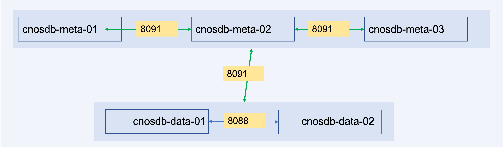

CnosDB分布式部署
摘要：本次分享内容为往期内容的回顾以及新出炉的分布式版本
- 回顾CnosDB基本概念
- CnosDB分布式部署
回顾CnosDB基本概念
一些基本概念
series
point
measurement
tag
tag key
tag value
tag set
field
field key
field value
field set
timestamp
retention policy
集群角色
cnosdb
CnosDB的主进程，可以单独启动对外提供服务，也可以与cnosdb-meta公共启动对外提供服务
cnosdb-meta
CnosDB的元数据管理节点，用于协调集群，必需与cnosdb搭配使用，cnosdb-meta中只存储节点信息、节点上的分片信息，数据库，保留策略，订阅信息以及权限和角色 同时cnosdb-meta节点必需为3个及以上的奇数个，因为其使用raft协议来维护节点的一致性，它使用选举机制保证集群一定会存在一个leader节点，奇数个节点能够保证被选举的节点能够得到大多数选票，从而成为leader节点
部署架构
最小集群部署架构请参考一下图片，由3个cnosdb-meta节点和2个cnosdb节点组成 cnosdb节点的数量必需被保留策略中复制因子数量整除，如果保留策略的复制因子数量是2，cnosdb节点的数量必需为2，4，6，..., 如果保留策略的复制因子数量是3，cnosdb节点数量必需为3，6，9

CnosDB分布式部署
